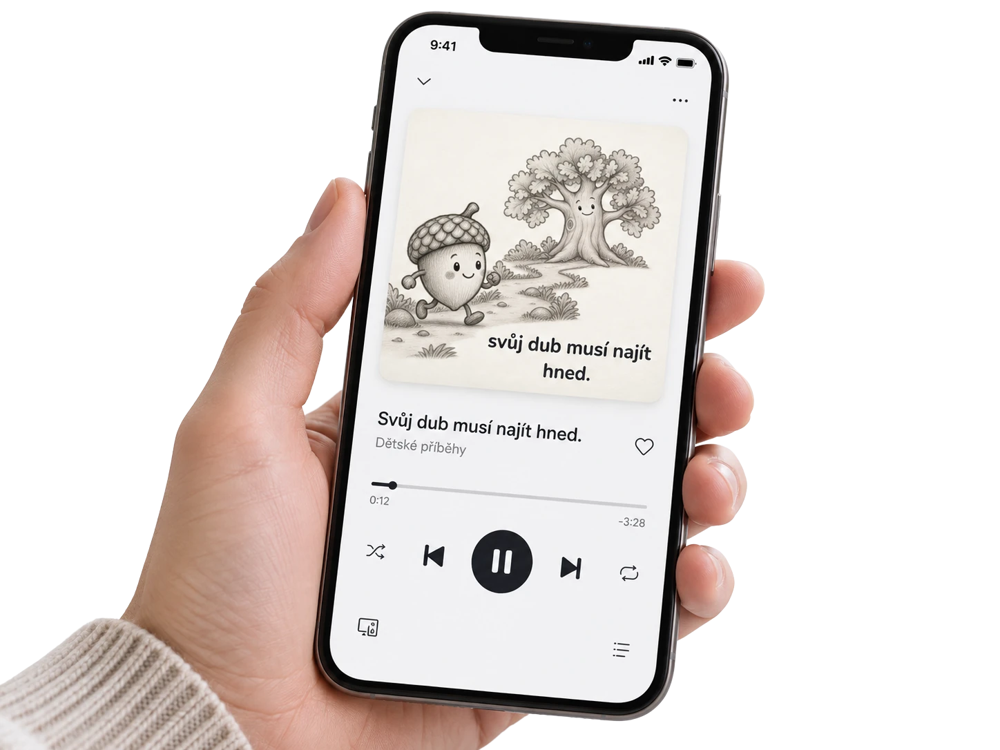
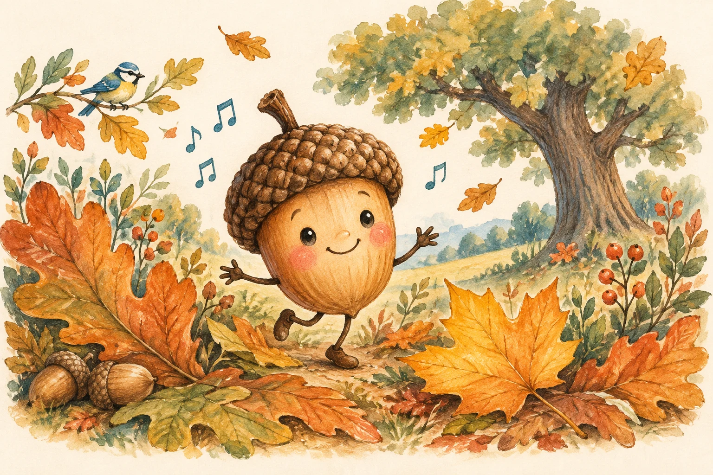
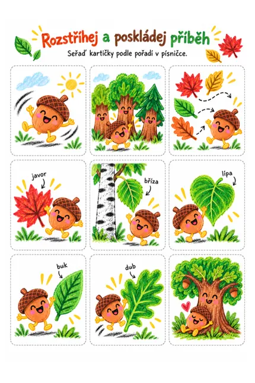
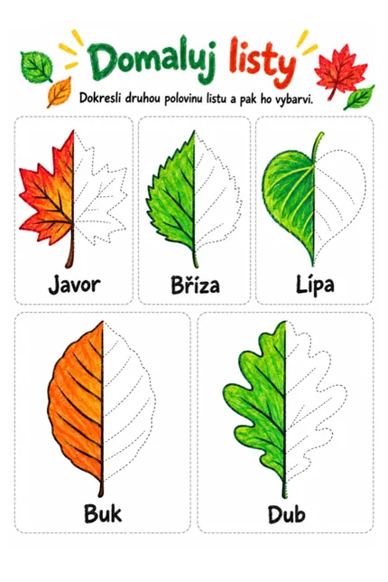
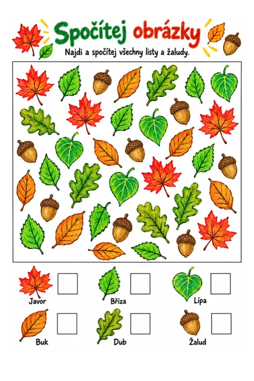
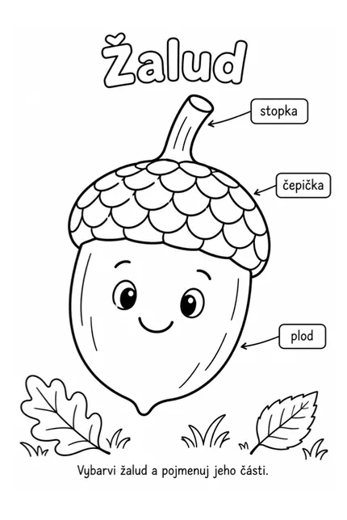
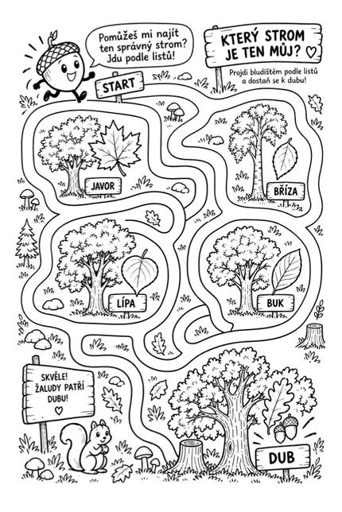
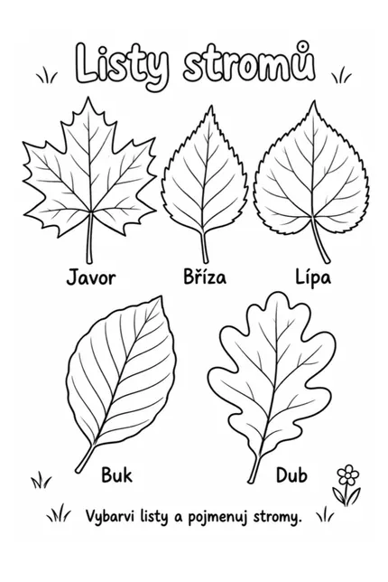
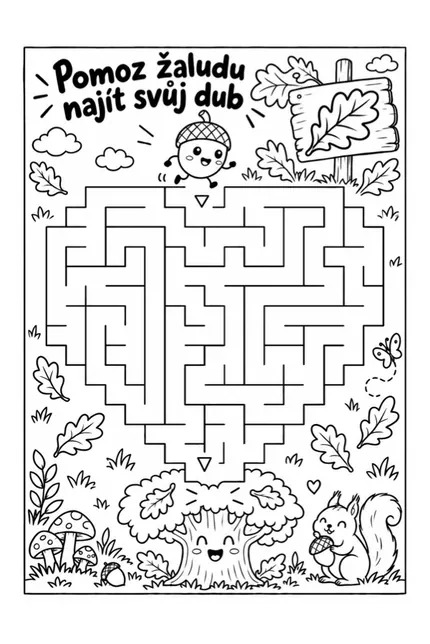
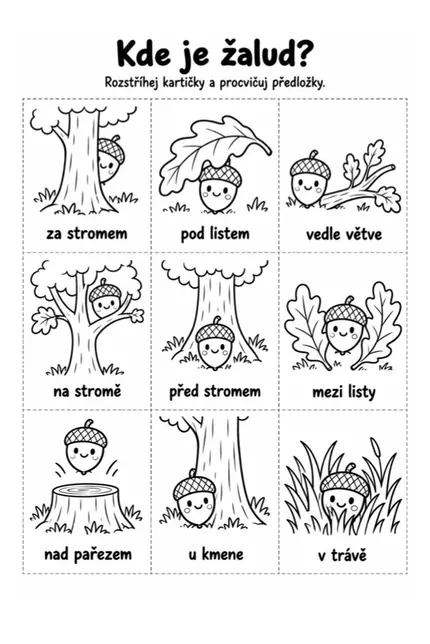

Žalud a listy.
Písnička, která nekončí
u obrazovky.
Nejdřív si zazpíváte. Pak vezmete pastelky i nůžky a vydáte se za listy. Písnička s autorským textem, videoklip a 9 stran aktivit pro společné objevování.
MP3 + MP4 + PDF Stáhnete a vytisknete doma

k vytištění

Přehrát ukázku · Žalud a listyVideo se nepodařilo načíst. Zkuste to prosím později.
Nejdřív se zaposlouchejte
Kam patří
malý žalud?
Vydá se mezi stromy, poznává jejich listy a hledá ten svůj. Najde nakonec svůj dub?
Pusťte se s dětmi do jeho příběhu. A až písnička dohraje, dobrodružství může pokračovat u vás doma.
Od první noty až k vlastnímu objevu.A co až dozní poslední tóny?
Obrazovku můžete odložit. To nejlepší teprve začíná.
- 01
Pusťte si písničku
Seznamte se s žaludem a jeho příběhem. Poslouchejte, zpívejte, klidně i tancujte.
- 02
Vytáhněte pastelky
Vytiskněte si aktivity. Hledejte cestu, spojujte listy a dejte obrázkům vlastní barvy.
- 03
Vyrazte za listy
A co potkat opravdový dub? Vezměte příběh s sebou ven a objevujte přírodu společně.
Trocha hudby. Trocha tvoření. Hlavně spolu.
Malé ruce budou mít co dělat.








Všechno pro vaše malé dobrodružství
Hudba, příběh
a spousta hraní.
Žádný balíček na poště. Soubory po zaplacení stáhnete a papírové aktivity si vytisknete doma.
DIGITÁLNÍ SADA · MP3 + MP4 + PDFAutorská písnička
Originální text a hudební příběh. MP3 ke stažení pro další poslech.
Videoklip k písničce
Bez divokých záběrů. Jednoduché prolínání obrázků, cíleně antistimulační v jemných barvách.
9 stran aktivit v PDF k tisku
3 barevné a 6 černobílých stran, které se hodí i k vybarvování.
Vezměte si příběh domů
Žalud a listy
Písnička, videoklip a aktivity.
Všechno v jedné sadě pro společný čas.
naší první sady
- MP3 písničky + MP4 videoklipu
- PDF s 9 stranami aktivit k vytištění
- Digitální soubory ke stažení po zaplacení
Fyzický produkt neposíláme. Materiály vytisknete doma.
Objednávku se nepodařilo načíst. Zkuste stránku obnovit nebo nám napište na podpora@bardio.cz.

Od naší rodiny k té vaší
Bardio vzniká
u nás doma.
Jsem Radek Brázdil, táta tří dětí. Rád propojuji kreativitu s technologiemi. První písničky a aktivity vznikají pro naše děti. A ty povedené postupně posílám dál, k ostatním rodičům.
Nechci dětem přidávat další čas před displejem. Zajímá mě, jak může jedna písnička odstartovat hraní, tvoření a společnou chvíli mimo něj.
Tohle je teprve začátek
Velké plány pro Bardio.
Z písniček na míru postupně roste něco nového. Místo, kde hudba a technologie pomáhají rodičům a dětem společně tvořit, hrát si a objevovat svět.
Nové Bardio teprve vzniká. Buďte u toho od začátku — při spuštění vám pošlu uvítací materiály zdarma.
Co po zaplacení dostanu?
Digitální soubory ke stažení: písničku ve formátu MP3, videoklip ve formátu MP4 a PDF s 9 stranami aktivit A4. Z toho jsou 3 strany barevné a 6 černobílých.
Přijde mi něco poštou?
Ne, sada je čistě digitální. Materiály si stáhnete a vytisknete doma. Do hraní se tak můžete pustit bez čekání na balíček.
Potřebujeme barevnou tiskárnu?
Sada obsahuje 6 černobílých stran vhodných i k vybarvování a 3 barevné. S černobílou tiskárnou můžete začít černobílými aktivitami.
Musíme u toho být online?
Staženou MP3 i MP4 můžete přehrát i bez internetu. Na vytištěné aktivity už potřebujete jen papír, pastelky a chuť objevovat.